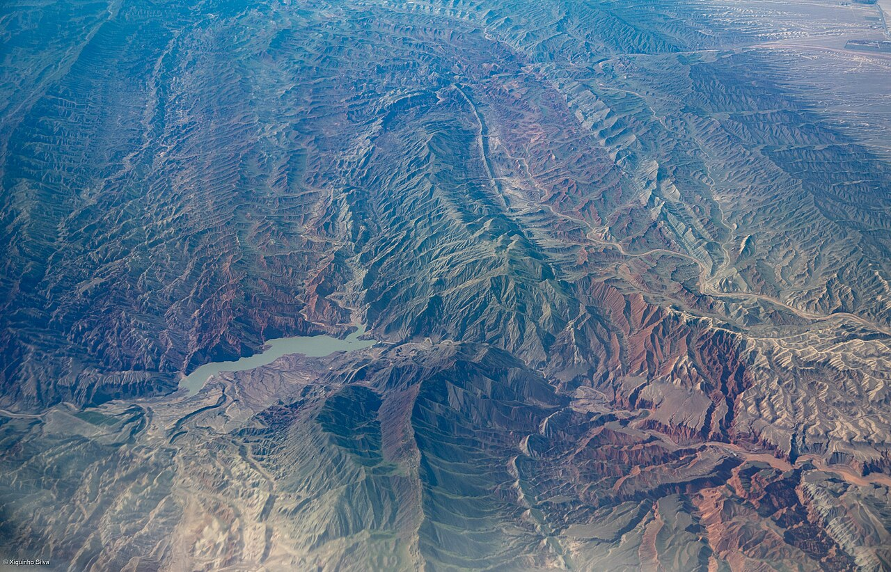

独库公路（G217 独山子—库车段）连接北疆与南疆，翻越天山山脉，562 公里浓缩了草原、峡谷、雪山、雅丹与戈壁。每年仅夏季开放，是中国最受欢迎的短途「景观高速公路」之一。
北起独山子，南至库车，沿途可停独山子大峡谷、乔尔玛、那拉提、巴音布鲁克、大小龙池、天山神秘大峡谷。因海拔与气候差异，一日内可体验「四季」。北南双向风景不同，时间允许建议全程而非半程折返。
开放期通常为 6–9 月，具体以新疆交通运输部门公告为准。部分路段限 7 座以下车辆，房车与货车可能受限。乔尔玛至巴音布鲁克段海拔高，需防高反与低温。
Itinerary
分日行程
独山子 → 乔尔玛 → 那拉提
上午游览独山子大峡谷，下午经乔尔玛烈士陵园致敬筑路官兵。翻越哈希勒根达坂，隧道前后温差明显。傍晚抵达那拉提镇。
那拉提 → 巴音布鲁克
上午可选那拉提空中草原景区，下午短驱至巴音布鲁克。傍晚看「九曲十八弯」日落（需景区交通），这里是《飞驰人生》取景地之一。
巴音布鲁克 → 大小龙池 → 库车
翻越铁力买提达坂，经大小龙池两个高山湖泊，进入南疆库车境。下午可访天山神秘大峡谷，红层峡谷在斜光下如火焰。
库车休整或返程
库车老城、苏巴什佛寺可选。若北返可原路或经 G314 至乌鲁木齐方向。检查刹车片，长下坡对制动消耗大。
库车 → 乌鲁木齐（北返延伸）
若从乌鲁木齐出发走独库，此日可作为返程长途。经 G314 或再次穿越独库北段，单日里程较长，建议两人轮换驾驶。独库公路每年开放时间有限，务必确认公告。
Photo Essay
沿途影像





Highlights
核心景点
独山子大峡谷
天山北坡侵蚀形成的灰色峡谷，亿年地质剖面裸露。网红玻璃桥与步道适合拍照，注意安全边界。
乔尔玛
独库公路中段枢纽，烈士陵园纪念 168 名筑路烈士。这里也是南北疆物资中转站，加油与简餐可用。
那拉提草原
哈萨克牧区，空中草原可远眺雪山。6–7 月野花盛开，牧区毡房提供特色餐饮。
巴音布鲁克
中国第二大草原，开都河九曲十八弯在日落时分可能出现「九个太阳」倒影。天鹅湖保护区需尊重观鸟距离。
大小龙池
铁力买提达坂两侧的高山湖泊，大龙池更大更上镜。湖水来自天山冰雪融水，颜色随季节变化。
Route
途经站点
北起点
克拉玛依市辖区，出发前加满油。
中段枢纽
哈希勒根达坂前后注意防滑与保暖。
空中草原
景区与镇区分离，旺季住宿紧张。
九曲十八弯
海拔 2500 米，夜间温度可接近 0℃。
南终点
南疆历史文化名城，可接南疆环线。
Practical
实用信息
- 独库公路开放期短，出发前查阅新疆交通运输官方通告。
- 部分达坂有积雪，即使夏季也备薄羽绒服与手套。
- 长下坡用低挡位发动机制动，避免刹车热衰退。
- 那拉提、巴音布鲁克旺季住宿贵，提前 2 周预订。
- 尊重牧区牲畜路权，遇牛羊群慢行，勿鸣笛惊吓。
EV Tips
新能源出行提示
驾驶腾势 N7 等纯电 SUV 出发前，请特别注意以下事项：
- 独库公路沿线快充稀少，独山子、库车出发前务必满电，中途仅可依赖少量慢充或便携方案。
- 长下坡路段动能回收可显著补电，但需同时注意传统制动备份。
- 高海拔低温段提前预热电池（若车辆支持），提升充电与放电效率。